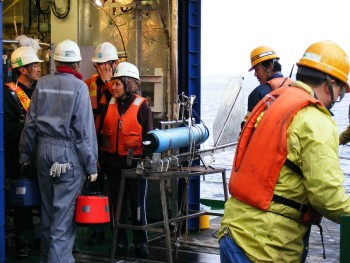
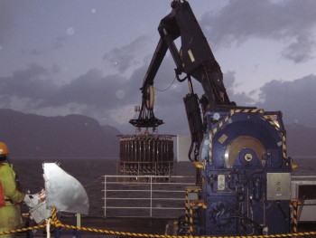

2013-02-04
Summer Holidays (South Hemisphere)
We would like to inform you that our administration will be closed from February 4 to March 4 for Summer Holidays.

|
The COPAS Center is devoted to advanced basic scientific research on the circulation, biogeochemical cycling, ecology and paleoceanography of the Eastern South Pacific Ocean. The objective is to understand climate and ocean variability (present and past), the impact on marine ecosystems and regional productivity. Multi- and interdisciplinary research covers diverse temporal and spatial scales, and is based on observations, experiments, retrospective analysis, and modelling. This is done through six research programs. The Center also provides advanced training opportunities to young scientists for research careers in oceanography and related areas, through the various ongoing activities at the University of Concepción, and the Universidad Austral de Chile (associated institution). These are the Graduate Studies in Oceanography, the Austral Summer Institutes, and the Postdoctoral program. With funding provided by the Fund for Advanced Research in Priority Areas (Centers of Excellence FONDAP) of the National Commission for Science and Technology (CONICYT), the Centro de Investigación Oceanográfica en el Pacífico Sur-Oriental (COPAS, Center for Oceanographic Research in the eastern South Pacific), was established in March 2002 at the University of Concepción in Concepción, Chile. The creation of the COPAS Center represents one of the largest national efforts directed to oceanographic research. The COPAS Center also acknowledges additional financial support from Fundación Andes, the MECESUP Program of the Ministry of Education, and the University of Concepción. COPAS has become a center of high scientific productivity attracting an important number of graduate and undergraduate students and postdoctoral fellows in oceanography. COPAS is today an oceanographic reference entity both at the national and international level. Since its creation in March 2002, the COPAS Center has published 379 scientific articles (ISI), edited 5 books, 35 book chapters, and has served as a working platform for 86 graduate, and more than 70 undergraduate theses. |

2013-02-04
Summer Holidays (South Hemisphere)
We would like to inform you that our administration will be closed from February 4 to March 4 for Summer Holidays.
2012-12-18
The COPAS Center, wishes you and your family a Merry Christmas and a Happy New Year

Carina Lange Directora 2012-11-12
Symposium UV radiation and marine ecosystems: current research and strategies for the future
December 5-7, 2012 2012-10-29
Call for students to perform graduate thesis in Bio-optics
Project: Bio-optical technologies applied to develop rapid screening of Red Tide Requirements:
Duration of thesis and dedication:
Head of Office: Terraplen N 869 Remuneration: Monthly fees are canceled Application deadline: November 30, 2012 Send CV to: Alejandro Clément D. 2012-08-20
Austral Summer Institute XIII
The Department of Oceanography and COPAS Sur-Austral of the University of Concepcion, Chile, are pleased to announce the Austral Summer Institute XIII (ASI XIII) to be held at the University of Concepcion, in December 2012 and January 2013. ASI XIII will be devoted to topics on physical, chemical and biological processes in the marine environment. Detailed information on lecturers, program and application form available at: 2012-01-26
Summer Holidays (South Hemisphere)
We would like to inform you that our administration will be closed from January 30 to February 26 for Summer Holidays.
2011-12-14
Merry Christmas and a happy and prosperous New Year 2012
 2011-12-13
Workshop LIA MORFUN

The International Associated Laboratory MORFUN, which links the COPAS center and The Observatoire Océanologique de Banyuls sur Mer (OOB, UPMC /CNRS) organized a workshop at the French marine station between 5th and 8th December 2011. French and Chilean researchers worked closely during this three days meeting and prepared the research projects that will be developed during 2012 by MORFUN. 2011-11-18
Curso: Tópicos de la Oceanografía del Pacífico Sur-Oriental (TOPAS)
El Programa preliminar del Curso TOPAS 2011 lo pueden encontrar en: y el plano del lugar de realización del Curso, lo puede bajar en: 2011-07-25
Winter Vacation
The COPAS administration will be closed 25-29 July in regard of the University winter vacation
2011-07-04
Austral Summer Institute XII
The Department of Oceanography and the Center for Oceanographic Research in the eastern South-Pacific of the University of Concepcion, Chile, are pleased to announce the Austral Summer Institute XII (ASI XII) to be held at the Main Campus of the University of Concepcion and at the Coastal Station for Marine Research of the Pontificia Universidad Católica de Chile, on October and November 2011, and January 2012. ASI XII will be devoted to topics on Marine Genomics, Time-Series in Oceanography and Microbial Oceanography. Detailed information on lecturers, program and application form available at: 2011-06-29
A new component of the nitrogen cycle in oxygen minimum zones (OMZ)
Diazotrophy, the process by which marine microbes can use N2 as a source of N has long been considered exclusive of oligotrophic areas of the ocean. A study recently published in PLOS One shows for the first time that nitrogen fixation can occur in ecosystems where upwelling of denitrified marine waters dominates. The results obtained in the OMZ of northern Chile and Peru suggest a direct interaction of sources and sinks of N in the ocean and have important implications for our current view of the marine nitrogen cycle.
doi: 10.1371/journal.pone.0020539 2011-04-13
Boletín 03, Capítulo Ciencias del Mar, Red Universitaria Cruz del Sur
Contenido: "Cambio climático global a larga escala: ¿Qué información nos entregan los sedimentos marinos del Pacífico Sur-Oriental?" "Cambio climático global: Hipoxia, mortandades y varazones en la costa de Chile" "Reciclaje de gases invernadero (óxido nitroso y metano) en la región del Pacífico Sur-Oriental" "Cambios Climáticos en Chile: Proyecciones y necesidades regionales" "Ecología reproductiva, ecología larval y ontogenia bentónica temprana en un océano que se torna más cálido y que se acidifica" "La acidificación del océano y el pH del mar costero de Chile" "Cambio Climático y Pesquerías: Un ejemplo de aplicación" 2011-01-31
Summer Holidays (South Hemisphere)
We would like to inform you that our administration will be closed from January 31 to February 25 for Summer Holidays.
2011-01-04
Would you like to know about our latest research efforts?
2010-12-29
Tsunamis:
comprendiéndolos y conviviendo con el riesgo Taller de Difusión
Austral Summer Institute XI (ASI XI) Viernes 7 de enero de 2011 Auditorio Claudio Gay Facultad de Ciencias Naturales y Oceanográficas Inscripciones: monica.sorondo@oceanografia.udec.cl  Programa 2010-11-04
Postdoctoral Position in Oceanography
CLOSED!!!
El/la candidato/a seleccionado/a trabajará en alguno(s) de los temas científicos del Centro que conlleve a publicaciones sobre los avances recientes en el entendimiento de la oceanografía del Pacífico Sur-Oriental. El cargo es de jornada completa por el periodo de 14 meses y está disponible de inmediato. 2010-10-04
Dr. Michael DeGrandpre
 We are pleased to inform that Dr. Michael DeGrandpre, Professor of Chemistry at the University of Montana, is a visiting professor on sabbatical leave (September 2010 through May 2011) at the University of Concepción working in the Department of Oceanography and the COPAS Center. His wife Kate and daughters Ella and Mabel are also here attending school and learning Spanish. Dr. DeGrandpre's research is focused on the development and application of autonomous sensors for studying the ocean carbon cycle. Together with colleagues at UdeC, Osvaldo Ulloa, Oscar Pizarro and others from the COPAS Center who are studying the Chilean upwelling system off Concepción, he is placing sensors on the mooring (36°27.86'S and 73°10.12'W, at 103 m water depth) located close to COPAS Station 18. These sensors will be able to establish to what extent upwelling controls calcium carbonate saturation and how saturation states are altered by ocean acidification. Dr. DeGrandpre will also be teaching a class called "The Ocean Carbon Cycle" during the Austral Summer Institute XI. The sabbatical in Concepción is supported in part by the University of Montana, the USA/Chile Fulbright Foundation, the Faculty of Natural Sciences and Oceanography, and the COPAS Center of the University of Concepción. 2010-09-04
U.S. Department of State Supports Chilean Science through Grant for Oceanographic Equipment
 On 1 September, Judith McHale, Under Secretary of State for Public Diplomacy and Public Affairs, announced a State Department grant of USD310,000 to the University of Concepcion’s COPAS Center for Oceanographic Research in the Eastern South Pacific. 2010-09-03
Our New Building
2010-09-03    2010-09-03
Boletín 02, Capítulo Ciencias del Mar, Red Universitaria Cruz del Sur
 Contenido: "El tsunami de 2010 en Chile: Devastación y sobrevivencia de las comunidades de pescadores artesanales" "Levantamiento cosísmico de la costa del Bío Bío como efecto del terremoto del 27 de Febrero de 2010 y su efecto sobre la diversidad del intermareal rocoso" "Efecto del tsunami del 27 de Febrero de 2010 sobre la estructura física y biológica del estuario del río Queule (Región de La Araucanía)" "Evidencias del hundimiento en las islas levantadas por el terremoto de 1960: un precedente para el futuro de la costa levantada por el terremoto del 2010" "Efectos del terremoto y tsunami del 27 de Febrero de 2010 sobre las playas arenosas del Maule y Bío Bío" "Efectos del terremoto y tsunami del 27 de Febrero del 2010 sobre la comunidad de fondos blandos de Bahía Coliumo" "Altura y propagación de las olas generadas por el tsunami del 27 de Febrero a lo largo de las costas de Chile" "Posible influencia de una recientemente descubierta falla de escala regional en el mecanismo del terremoto del 27 de Febrero de 2010" 2010-09-02
Boletín 01, Capítulo Ciencias del Mar, Red Universitaria Cruz del Sur
 Contenido: "Impacto del terremoto sobre mamíferos marinos: El caso de la lobería de Cobquecura" "Hidrodinámica compleja característica de los maremotos en la costa de Chile" "Impacto geomorfológico del Terremoto y Tsunami del 27 de Febrero de 2010" "Mediciones de corrientes y nivel del mar durante el tsunami del 27 de Febrero frente a la desembocadura del río Itata, Chile Central" "Cambios catastróficos en la desembocadura del río mataquito después del terremoto y tsunami febrero 2010" "Levantamientos costeros en torno al Golfo de Arauco y Bahía de Concepción originados por el terremoto de Febrero 2010: impactos en comunidades biológicas marinas de fondos duros" "Impacto del Tsunami del 27 de Febrero de 2010 en el poblado de San Juan Bautista, Archipiélago de Juan Fernández" "Evaluación Preliminar de la Calidad del Agua y Sedimentos Marinos en la Zona Afectada por el Terremoto y Posterior Tsunami" "Cambios en la estructura de hábitat de la Laguna Albúfera, Humedal El Yali (V Región), luego del tsunami del 27 de Febrero del 2010" 2010-08-12
Position: Assistant Research in Oceanography
¡CERRADO!  The Center for Oceanographic Research in the eastern South Pacific (COPAS) of the University of Concepcion (UDEC), Chile, invites applications for a full-time 12-month Assistant Research position in Oceanography. Read more 2010-08-01
Winter Vacation
The COPAS administration will be closed 2-8 August in regard of the University winter vacation
2010-07-13
Austral Summer Institute XI
The Department of Oceanography and the Center for Oceanographic Research in the eastern South Pacific of the University of Concepcion, are pleased to announce the Austral Summer Institute XI (ASI XI) "From Tsunamis to Water Pathogens: Understanding Ocean Hazards in the XXI Century", to be held at the Main Campus of the University of Concepcion, Concepcion, Chile, in January 2011. Detailed information on lecturers, program and application form available at: Sincerely, Monica Sorondo
 2010-06-25
Would you like to know about our latest research efforts?
Please read COPAS Newsletter 20 !!!
COPAS Center and the DICHATO Marine Biology Station heavily hit by the earthquake and tsunami 2010-05-10
Reconstructing Climate Variations in South America and the Antarctic Peninsula over the last 2000 years
We are pleased to inform about this II International Symposium, which will be held in Valdivia, Chile between 27 to October 30, 2010
 2010-05-06
Dear Coleagues and Friends,
It is a pleasure for us to let you know that on April 29th the COPAS Center has resumed the Time Series Study off Concepción. Due to the partial loss of our University vessel Kay-Kay II, in this opportunity we have used a fishing boat ("GIMAR") which will probably be our sampling platform over the next 2-3 months until the Kay-Kay II can be repaired and be functional again. Activities during April 29th included the sampling of the water column at 5 depths (0, 10, 30, 50 and 80 m) and CTD casts (SeaBird25), the BBL, and the sediments at our Station 18. Water column samples were taken for nutrients, oxygen, pigments, microplankton, DOC, DNA. Net sampling for zooplankton was also done, and even a drifting sediment trap could also be deployed.
2010-05-03
Would you like to know about our latest research efforts?
2010-04-12
Our New Building
2010-04-12  2010-03-22
Dear Friends and Colleagues,
Three weeks have passed since the devastating earthquake and tsunami of
February 27th. We appreciate all the mails and text messages of concern
and support received since then. Your continuous support has been of great
help and encouragement for us at this very difficult time.
We are grateful that all COPAS members are safe and accounted for; however, several of our students, technicians and researchers have lost their home and belongings completely or partially. As you know, the fishing town of Dichato and the Biological Station were completely destroyed by a series of tidal waves. Equipment, computers, samples and data were just swept away by the waves, including the University research vessel Kay-Kay II which ended up on a hill inland. The main campus in Concepción has also suffered severe damages, including the burning down of the Chemistry Department. Here too, equipment, samples and data have been completely or partially damaged. The building that hosts the COPAS administration, luckily, has not suffered structural damages, electricity has been restored, and we are working on cleaning up and making room for those in need of a working place. We are assessing and inventorying damages and needs for graduate student’s theses. The University’s server is up and most of our UDEC email addresses are working now. Ahead of us lies an immense task to rebuild marine science at the University of Concepción. We will do it! Finally, I would like to thank you again on behalf of the oceanographic community of Concepcion. Sincerely yours, Carina Lange Director COPAS Center 2010-02-01
Our New Building
2010-02-01  2010-01-29
Summer Holidays (South Hemisphere)
We would like to inform you that our administration will be closed from February 1 to February 26 for Summer Holidays.
2010-01-12
Our New Building
2010-01-12  2010-01-04
Call for applications
El Programa COPAS Sur-Austral del Centro de Investigación Oceanográfica en el Pacífico Sur-Oriental (COPAS) llama a concurso público para el siguiente cargo:
INVESTIGADOR (A) POST-DOCTORAL OCEANOGRAFÍA 2009-12-29
Our New Building
2009-12-29  2009-12-03
Our New Building
2009-12-03  2009-12-02
"Carbon and Nutrient Fluxes
in Continental Margins" Liu, K.K., Atkinson, L., Quiñones, R., Talaue-McManus, L. (Eds.), Springer Germany, 2010 New Book:
 2009-11-18
"Manual de Métodos para el Estudio de Sistemas Planctónicos Marinos"
Alder, V.A., Morales, C.E. (Eds.), Eudeba Buenos Aires, 2009 New Book:
 2009-11-05
Our New Building
2009-11-05  2009-10-20
Our New Building
2009-10-20  2009-09-01
Our New Building
2009-09-01  2009-08-31
Our New Building
2009-08-31  2009-07-02
Austral Summer Institute X
The Department of Oceanography and the Center for Oceanographic Research in the eastern South Pacific (FONDAP COPAS) of the University of Concepcion, Chile, are pleased to announce the Austral Summer Institute X (ASI X) ASI X will be devoted to topics on Multi-Scale Observations in Coastal Oceanography and will be held at the Main Campus of the University of Concepcion and at the Marine Biological Station in Dichato, Chile, on December 2009 and January 2010. Detailed information on program, lecturers and application form at:  2009-06-30
Primer Congreso de Oceanografía Física, Meteorología y Clima
Universidad de Concepción, desde el 30 de Septiembre al 02 de Octubre de 2009
2009-05-19
2a Feria Educativa del Océano
Martes 26 y Miércoles 27 de Mayo
 2009-05-18
Would you like to know about our latest research efforts?
2009-04-28
Postdoctoral Position in Marine Microbial Molecular Ecology
CLOSED!
The Universidad de Concepción, Chile, invites applications for a two-year postdoctoral position in marine microbial molecular ecology. The postdoctoral fellow will work as part of the research project "Microbial diversity and activity in the seasonal hypoxic coastal waters off Central Chile and Oregon: a comparative study", funded by the Gordon and Betty Moore Foundation. Read more 2009-03-23
RV MIRAI
Almost 60% of the sampling stations of the research cruise onboard the Japanese vessel MIRAI have been completed by COPAS and COPAS-Sur Austral scientists in collaboration with scientists from the JAMSTEC institution. The cruise is centered on the Chilean Patagonia between 43 and 56 degrees south, and activities include the sampling of the water column and the sediments. The Chilean scientific party is composed of Carina Lange, Silvio Pantoja, Wolfgang Schneider, Giovanni Daneri, José Luis Iriarte, Alejandro Ávila, Karol Espejo, and Eduardo Menschel.
The Japanese research vessel MIRAI is currently steaming toward the Magellan Strait to start work in the area on March 23rd.    2009-01-23
Summer Holidays (South Hemisphere)
We would like to inform you that our administration will be closed from January 26 to February 22 for Summer Holidays.
2009-01-05
A team of scientists from different countries (incl. Chile) lead by Drs. W. Naqvi (from NIO, Goa, India) and V. Smetacek (from AWI, Bremerhaven, Germany) will conduct the iron fertilisation experiment LOHAFEX (Loha is Hindi for Iron, FEX stands for Fertilisation EXperiment) in Antarctic waters from the German research vessel "Polarstern" between 7th January and 17th March 2009. The scientific team is composed of 32 scientists from India, 11 from Germany and 10 from Italy, Spain, Chile, France, UK and USA. They will board "Polarstern" in Cape Town, S. Africa on January 7, 2009, and proceed to the experimental site in the southwest Atlantic at about 50°S and 37°W. Dr. H. González (UACh and COPAS) will be in charge of studying POM export (biological pump efficiency) due to faecal material flux and macrozooplankton (with emphasis on krill) standing stock.
2008-12-16
EXPLORA 2009 Projects Awarded
We are pleased to inform you that the project Tras la Huella del Carbono en los Fondos Marinos de Bahías y Fiordos has been awarded to COPAS
2008-12-15
Would you like to know about our latest research efforts?
2008-11-17
TOPAS 2008
El curso TOPAS se dictó en la Universidad Austral de Chile (UACh) en Valdivia durante la semana 3-8 de noviembre.
Diecinueve estudiantes de pre y postgrado participaron en el curso, incluyendo estudiantes del campus UACh Valdivia, campus UACh Puerto Montt y del Centro CIEP de Coyhaique  2008-08-28
Centros FONDAP, 10 años de investigación para el desarrollo de CHILE
2008-08-27
La Comisión Nacional de Investigación Científica y Tecnológica CONICYT, celebró los 10 años del Fondo de Financiamiento de Centros de Excelencia en Investigación Avanzada FONDAP, que a través de sus 7 Centros ha contribuido significativamente al desarrollo de la investigación científica y tecnológica de Chile, creando, además, fuertes vínculos hacia la empresa privada y hacia centros científicos de alto nivel en todo el mundo.  2008-08-26
10 AÑOS DE INVESTIGACIÓN PARA EL DESARROLLO DE CHILE
CEREMONIA CENTROS FONDAP DE CONICYT
Este evento busca dar a conocer el apoyo de CONICYT al desarrollo de la base científica y tecnológica de Chile, a través de los Centros de Investigación FONDAP. En la actualidad, CONICYT financia 7 centros de este tipo que, por un período de 10 años, han buscado contribuir significativamente al desarrollo del país. Fecha: 26 de agosto de 2008 2008-08-06
Austral Summer Institute IX (ASI IX)
"Coastal Processes and Environmental Problems"
December 15, 2008 to January 30, 2009 University of Concepcion www.udec.cl/oceanoudec/oceanografia 2008-07-18
COPAS, nuevo referente de ciencia oceanográfica
El Diario de Concepción, 2008-07-18
2008-07-03
Would you like to know about our latest research efforts?
2008-05-22
El Mercurio 2008-05-21
Oceanografía de la Universidad de Concepción en "Science" Científicos de todo el mundo midieron por primera vez cuánto nitrógeno lanzamos a los mares. Es mucho más de lo que ese sistema toleraría; nos puede envenenar. 2008-05-21
...Ya el año pasado entregamos financiamiento basal para ocho grupos de investigadores de distintas partes del país. Voy a mencionar un par: El Centro de Investigación Oceanográfico de la Universidad de Concepción y la Corporación Instituto de Ecología y Biodioversidad...
2008-05-20
El Centro FONDAP-COPAS y AquaSendas invitan a profesores, estudiantes y publico en general a visitar "La Primera Feria Educativa del Océano". En ella se presentarán investigaciones científicas como el descubrimiento de nuevas especies de organismos asociados a emanaciones de metano en el fondo del mar frente a Concepción, proyectos de educación ambiental marina para las escuelas, instrumental de investigación, un acuario marino, literatura y pintura relacionados con el mar. La feria estará abierta los días martes 27 y miércoles 28 de Mayo desde las 10 de la mañana hasta las 4 de la tarde, en el Hall Central de la Facultad de Ciencias Naturales y Oceanográficas de la Universidad de Concepción.
2008-03-17
En una Ceremonia encabezada por la Presidenta de la República, Michelle
Bachelet; CONICYT realizó la presentación de los ocho Centros Científicos
y Tecnológicos de Excelencia, adjudicados en el Primer Concurso del
Programa de Financiamiento Basal
 2008-01-03
New Research Vessel
2007-12-10
Adjudicado proyecto CONICYT, Financiamiento Basal
El Centro de Investigación Oceanográfica en el Pacífico Sur-Oriental de la Universidad de Concepción se adjudicó uno de los ocho proyectos seleccionados en el concurso de Financiamiento Basal de CONICYT para el desarrollo de Ciencia y Tecnología de Excelencia vinculada con el sector productivo y a nivel internacional. Nuestro Centro desarrollará el programa Oceanographic Applications for the Sustainable Economic Development of the Southern Region of Chile, y se enfocará en las áreas de Acuicultura, Pesquerías, y Monitoreo y Predicción Oceanográfica.
Mayor información en CONICYT 2007-12-07
CONCURSO POSTDOCTORAL CENTRO COPAS
CLOSED!
El Centro FONDAP de Investigación Oceanográfica en el Pacífico Sur-Oriental (COPAS) de la Universidad de Concepción (UDEC) llama a concurso a chilenos/as o extranjeros/as de preferencia con residencia en Chile, para un Cargo Postdoctoral en Oceanografía. Documento |
 © Center for Oceanographic Research in the eastern South Pacific (FONDAP - COPAS ®)
© Center for Oceanographic Research in the eastern South Pacific (FONDAP - COPAS ®)